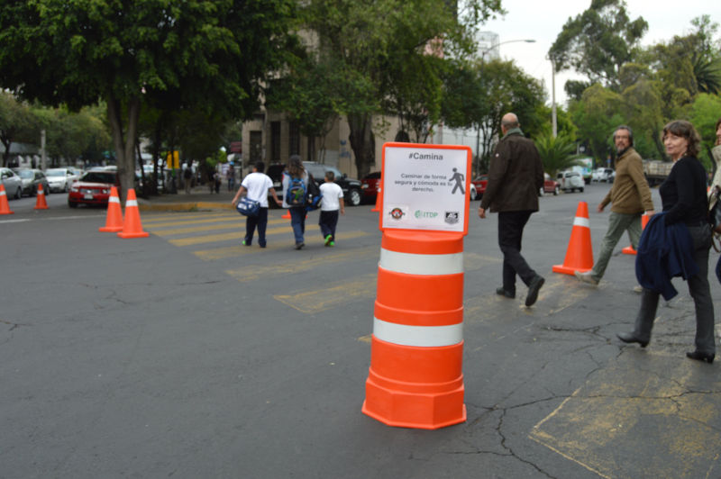
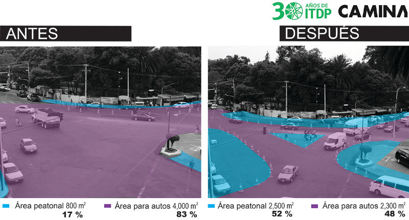
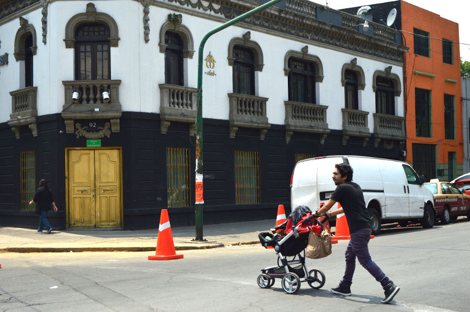
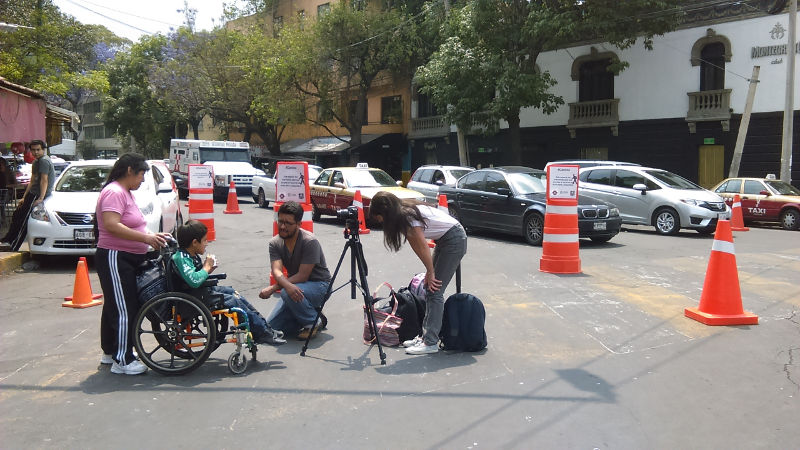

¿Cuántas veces has querido atravesar la calle y no sabes por dónde hacerlo? En nuestras ciudades continuamente encontramos intersecciones que son mares de asfalto donde hay confusión acerca del movimiento que deben hacer cada uno de los usuarios, y los que resultan más vulnerables son quienes caminan.
En ITDP México nos dimos a la tarea de hacer un ejercicio de rediseño como parte de la estrategia #Camina para analizar cómo funcionaría esta intersección si estuviera diseñada pensando en la seguridad de las personas que andan a pie. Nuestra herramienta fue el urbanismo táctico, mediante el cual de forma temporal se interviene la calle para rediseñar la geometría del cruce.

La intersección seleccionada se encuentra en el cruce de Coahuila, Jalapa y Yucatán, justo afuera de dos escuelas primarias, la Benito Juárez y Constitución de 1857. Ambas escuelas albergan en distintos turnos a más de 2,600 niños, de los cuales el 38% llega caminando de acuerdo a una encuesta realizada por Safe Kids México a 469 alumnos. Además, esta intersección está ubicada en el corazón de la Roma, donde existe un gran flujo de peatones, ciclistas, automovilistas, transporte público y transporte de carga.
Un buen diseño de la calle induce un comportamiento adecuado y mejora la visibilidad de todos los usuarios. El diseño propuesto se realizó analizando las líneas de deseo peatonal, es decir, la línea más directa que lleva al transeúnte a su destino. Para respetar estas líneas es necesario aumentar el espacio destinado a las personas con el fin de reducir la distancia de cruce. De los 4,800 m2 del área total de la intersección, 83% está destinada para los automóviles y solo 17% para los peatones. Con la intervención se destinó 52% a los peatones, además de que se ordenó el tránsito vehicular.

El urbanismo táctico permite visualizar cómo luciría un diseño más equitativo y seguro. Además, ayuda a transmitir el mensaje de que estas intervenciones no colapsan el tráfico vehicular, al contrario, lo ordenan y permiten que haya certidumbre acerca del movimiento a realizar.
Mostrar por unas horas que esta intersección puede ser distinta, que la situación puede mejorar para quienes transitan por ella, permite a las autoridades evaluar propuestas de diseño que priorizan al peatón y a la ciudadanía tener las herramientas para exigir mejores diseños, y por ende mejores ciudades.

Antes de la intervención se realizaron entrevistas a los transeúntes, quienes comentaron lo inseguros que se sentían al atravesar la calle. Una niña acompañada de su mamá que diariamente atraviesa por la gasolinera mencionó: “¡parece que se les va a acabar la gasolina! porque los autos no me dejan pasar”. Durante la intervención, los entrevistados destacaron lo positivo que sería si se quedara permanentemente y lo seguro que podrían cruzar los niños de camino a casa o a la escuela.

La intervención #Camina cambió el uso de la intersección, dejó de ser un cruce vehicular rápido y peligroso para volverse uno tranquilo y fácil de cruzar. Además, se observó un cambió en la actitud al caminar de los peatones, quienes podían a su vez relajarse en un espacio diseñado para ellos.
Uno de los grandes problemas es que sea normal tener calles diseñadas para el auto y no para los peatones. Esto debe cambiar. Necesitamos diseños que protejan la vida de las personas, el urbanismo táctico representa una herramienta para empezar a proponer que esta situación puede ser distinta. La documentación y el proyecto se entregará a la Delegación, esperando que sea implementado de forma permanente.
Agradecimientos
- ITDP agradece el apoyo de la Delegación Cuauhtémoc, AG Industrias, Huerto Roma Verde, Safe Kids México y los voluntarios que apoyaron para esta intervención. Para más fotos invitamos a visitar nuestro flickr.